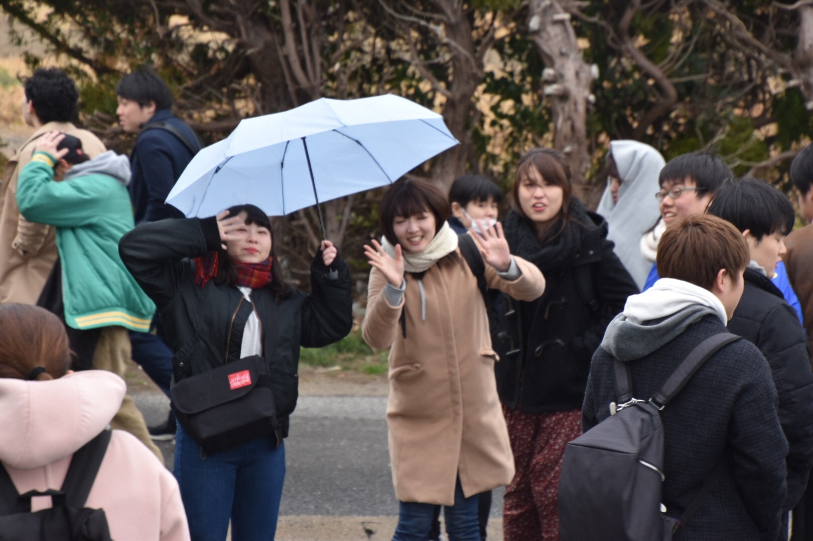
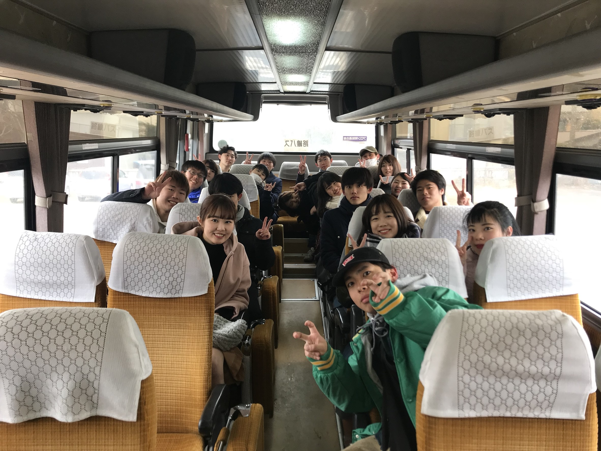

|
今日は合宿2日目です。 朝食の準備をしてくれてる生出(56) おはよう 
朝食後は今日も稽古です。眠そう。 一泊二日の小旅行のはずが転んで怪我をしてしまった里和(56) 女子代表は今日も元気そうです。 ……笑。 心ここに在らず×3 
今日の稽古は基本打ち中心のメニューでした。 稽古後の昼食はカレーでした！ 主将盛りを食べる主将森 おあとがよろしいようで。 今日は午後の稽古は休みで56期は学年別行動です！  いってらっしゃい～～～！  行きのバスの中でパシャり。 帰りの車の中でパシャり。 電車の中はこんな感じ レッサーパンダと記念撮影する1男 動物園到着～～～ 丹「私って～長濱ねるに似てるでしょ～？」 何かの動物「似てねぇよ！」 丹「ぎゃっ！！！」 彼女と動物園なうに使っていいよ ライオンとカジ 僕、コメント思いつかない、ごめんね 『来来来世越しの再会』 と、いう感じで楽しく学年別行動できたみたいですね これからも同期と仲良くね～～～ 学年別行動中は幹部は宿の中でこんな感じでゆっくりしてました ミーティングでは学年別行動のお土産を後輩からもらいました ありがとう～～ そのあと今日で帰ってしまう松川(56)と根本(56)に賞状とプレゼントの贈呈がありました しっかり自撮りしろよ～～ ミーティング後は逆転飲みが開催されて2日目は終了でした！ 3日目の様子はこちら (更新が遅れてしまい申し訳ありませんでした。) (※写真へのコメントは全て管理人がしております。) |